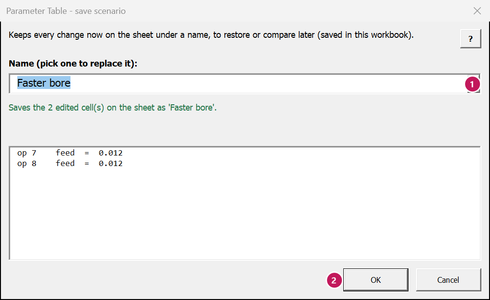
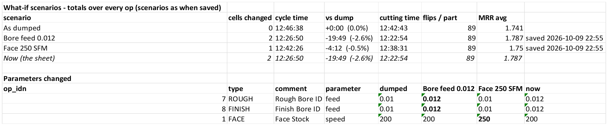

Scenarios
Ribbon: Parameter Table tab › Improve › Scenarios
What this is for
A scenario is your set of edits, saved under a name inside the workbook. Save one idea, try another, then compare them side by side: cycle time, cutting time, flips and MRR for each, and every parameter each one changes.
When to use it
- “Faster feeds or faster speeds – which saves more?”
- You want to keep a set of edits to come back to, without loading it yet.
- You want to show the boss two options.
Steps
- Make your first set of edits on the sheet.
- Scenarios › Save the changes as a scenario. Type a name, click OK.
- Put the sheet back (Back to the dump › Everything) and make the second set of edits. Save it under another name.
- Scenarios › Compare scenarios. A Scenarios sheet opens with the totals and every changed parameter, side by side.
- To go on with one: Scenarios › Restore a scenario. The sheet goes back to the dump, then that scenario's values go in. Edits on the sheet that were not saved are kept first, as a scenario named with the date and time, e.g. (before restore 2026-10-09 22:40) – nothing is lost.
- Delete a scenario removes one you no longer want (the sheet is not changed).




Worked example
Two ideas for the Oil Spool Head: faster bore feeds (ops 7 and 8 at 0.012), or a faster facing speed (op 1 at 250 SFM).
| Scenario | Cells changed | Cycle time | vs the dump | Flips / part |
|---|---|---|---|---|
| As dumped | 0 | 12:46:38 | +0:00 | 89 |
| Bore feed 0.012 | 2 | 12:26:50 | -19:49 (-2.6%) | 89 |
| Face 250 SFM | 1 | 12:42:26 | -4:12 (-0.5%) | 89 |
The bore feeds save about five times more. Restore Bore feed 0.012, save, and load it.